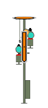

|
|
| Here is the Distant Signal for the Entry Signal of the Langeland station. This Distant Signal announces the position of the next Main Signal approximately 1000m ahead . One of three different Signal Aspects are possible: |
| The following Main Signal is displaying Stop: Immediately after passing the Distant Signal, press the Indusi-Alert (Enter-Key in Numeric Keypad). The yellow 1000Hz-Light must illuminate. You must now reduce speed below 95km/h within 20 seconds and within approximately 750m be travelling slower than 65km/h. Make a Brake Application to reduce the speed to a stand by the next Signal. Brake Application |
 The following Main Signal is displaying Proceed. No further action is required. |
Immediately after passing the Distant Signal, press the Indusi-Alert (Enter-Key in Numeric Keypad). The yellow 1000Hz-Light must illuminate. You must now reduce speed below 95km/h within 20 seconds. Make a Brake Application if necessary to reduce the speed to 40km/h by the next Signal. Brake Application |